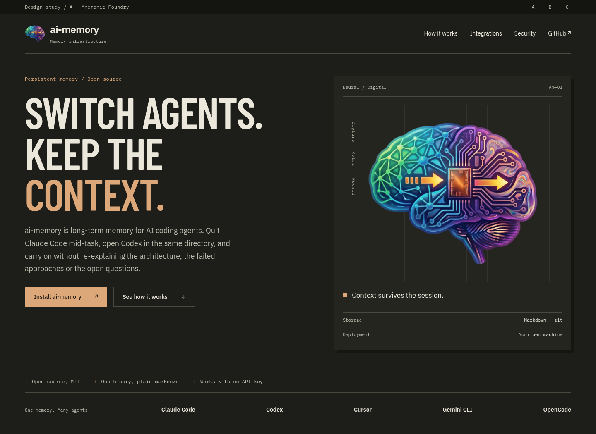

Mnemonic Foundry

Charcoal instrument panels, copper accents, compressed headlines. The brain is a piece of working hardware in a heavy, physical frame.
Open direction A ↗Three directions / 15 October 2026 / Prototype only
Three ways to build a technological identity around the existing brain. Each explores different materials, typography, and composition. Open a direction, resize it, and follow the page below the hero.
Pick the overall material and typography you want to live with across documentation, diagrams, and product pages. Individual pieces can cross over: A’s headline, B’s reading layout, or C’s connection diagram.
The brain artwork is unchanged in all three. There are no added glows, CRT effects, glitch text, animated counters, or fake terminal output. Product links go to the current website; the comparison navigation stays here.
Desktop comparison sheet · Mobile comparison sheet · Research and implementation notes
Disposable English design studies, outside the production build. Production catalogs and styles are unchanged.